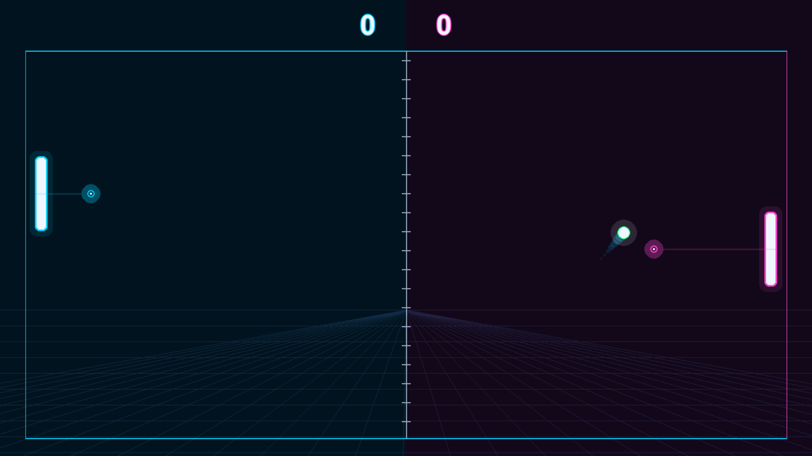
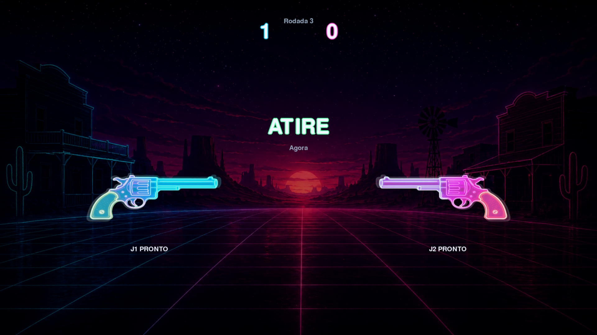
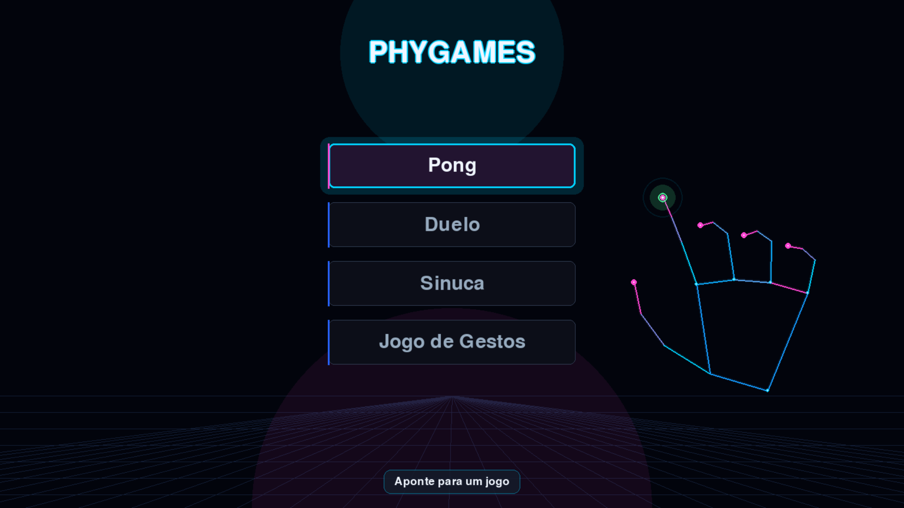
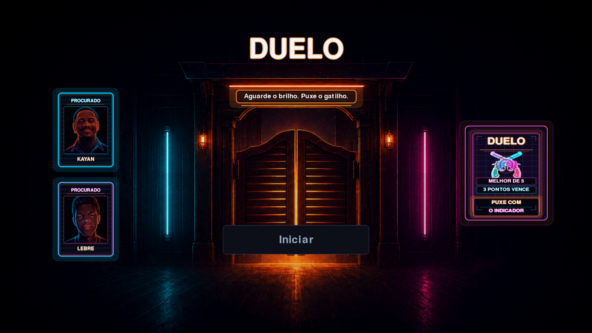

Aponte
Use a mão para escolher um jogo na central e entrar na partida.
Arcade com webcam
Sua mão vira o controle. Navegue, mire, reaja e dispute minigames rápidos sem precisar encostar em teclado, mouse ou joystick.
A ideia
O Phygames é uma central de minigames em que a webcam acompanha os movimentos das mãos e transforma gestos simples em ação dentro da tela. A proposta é entrar rápido, entender rápido e jogar se mexendo.
Use a mão para escolher um jogo na central e entrar na partida.
Controle raquetes, mira, força e respostas com gestos naturais.
Dispute rodadas visuais, curtas e fáceis de explicar para qualquer pessoa.
Sua mão vira o controle
O jogo foi pensado para ser entendido em poucos segundos: aparece a mão na tela, surge um alvo, e o corpo entra na partida. É uma experiência de arcade para testar reflexo, precisão e coordenação com outra pessoa do lado.
Minigames
Cada jogo explora uma forma diferente de transformar movimento em ação, mantendo a energia de partidas rápidas e visuais.

As mãos controlam as raquetes em uma disputa direta de reação e posicionamento.

Um faroeste neon de tensão rápida: vence quem reage no momento certo.
Gestos controlam a mira e a força da tacada em uma partida simplificada.

Repita gestos antes do tempo acabar e mantenha o corpo atento à sequência.
Vídeo curto
Uma demonstração rápida mostra a central e os minigames reais do projeto, usando capturas feitas durante o desenvolvimento.
Telas reais

Entrega DevLife
Phygames foi desenvolvido por Eduardo Lebre e Victor Kayan como projeto da disciplina Developer Life.
pip install -r requirements.txt.python main.py e permita o uso da webcam.Eduardo Lebre e Victor Kayan.
Equipe Roxo, Developer Life.
O fluxo começou em papel, com a ideia de menu por apontamento e minigames físicos. Esse esboço orientou a primeira versão jogável.
Ver esboçoContraste: fundo escuro, textos claros e chamadas neon deixam as ações principais visíveis.
Repetição: bordas, etiquetas, botões e títulos seguem a mesma linguagem arcade em todas as seções.
Alinhamento: grids responsivos mantêm capturas, textos e botões em leitura previsível.
Proximidade: cada minigame aparece junto do print e da descrição, evitando informações soltas.
A primeira versão priorizava cumprir conteúdo; esta versão reorganiza as informações para parecer uma página de jogo, com melhor hierarquia visual e menos blocos longos.
{kind=link}